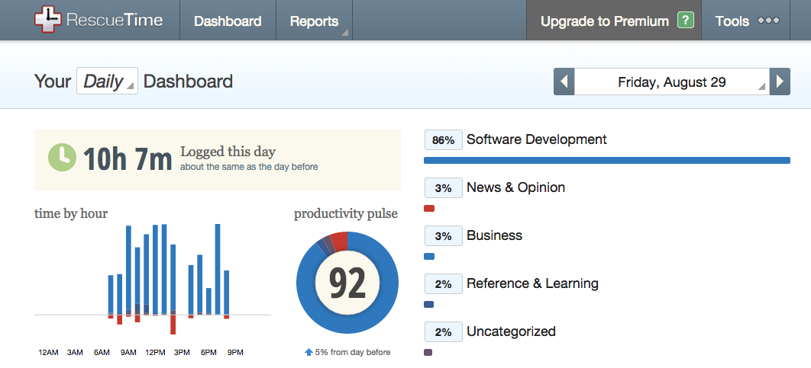
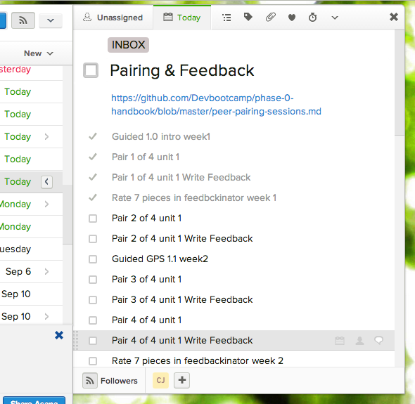

<< back
Productivity Slam: A Tale of 3 Websites
What are your favorite websites? Are they the same as the websites you visit most often? Do you have a way of knowing? I do. Check this out.
RescueTime (https://www.rescuetime.com/dashboard)
- Function: Install their tracker and RescueTime will silently lurk in the background tracking each site, app file, or tool you visit, and for how long. Customize the hours or types of sites tracked, as desired. Set goals and alerts to keep on track.
- UX & Design: Their free offering allows you to easily navigate to productivity snapshots across days/weeks/months and change classifications as needed. Clean graphics show you how you're spending your time at a glance. Their premium options include distraction block-out (similar free tools available elsewhere) and ability to enter offline productivity hours like a Sales call or a client meeting. My only frustration is the inability to set custom times to generate a productivity report e.g. if I want Weds-to-Monday stats, I manually collate day by day. Overall this site satiates the inner control freak and can lend some alarming news on just how much time you spend down the rabbit-hole.
- How I'm using it: Dev Bootcamp requires time-tracking of each week's phase-0 exercises to assess if they're doling out too much or too little to the new cohorts. Rescuetime makes this a snap; which is great, because frankly, I have zero time for anything else right now:

Asana (https://app.asana.com)
- Function: Make to-do lists. Share to-do lists. Never forget a thing.
- UX & Design: Create projects to control access or keep organized, tasks with due dates and tags live within each project, and users can populate a task with sub-tasks. Set-up email reminders to scold yourself when you're not meeting goals on time. The simplicity of this tool is key. Lose a task? Throw it into the searchbar. Undo with a click of a button. Drag & drop tasks between projects. Set up recurring reminders on tasks. My only gripe with Asana has been connectivity. While I only recall two major outages in the past 6 months, one lasted about 6 hours and caused the most unproductive workday ever. Offline access would make this tool a dream come true.
- How I'm using it: Asana has been my house of worship for many years. I may not check Facebook every day but I absolutely check Asana every morning. With the phone app I keep my lists handy of recommended books, movies that friends thought were cool, and ideas as they come to me. Remember that time you got really drunk and told me you loved Fievel Goes West? Probably not. But it's a note in my “gift ideas” project and I will blow your mind with the perfect present on your birthday. Oil changes, teeth-cleanings, and checking my credit score annually? Automated pop-ups. I've fallen deeply in love with the subtasks as I sifted through Dev Bootcamp's stack of to-dos involving pairing, feedback rating.

A Life of Productivity (http://alifeofproductivity.com)
- Function: What started out as Chris Bailey's 1 year experiment to maximize productivity (ayearofproductivity.com) grew to a more permanent fixture. He explores productivity hacks, practices like meditation, and self-experiments like limiting cell phone use, napping, reclusion, 90-hour work weeks, and more.
- UX & Design: Clean, simple, to the point. This site's layout is easy to maneuver, dusted with professional color-saturated graphics, and inline with the productivity ethos, a handy box at the top of each article with an estimated reading time and the top takeaway.
- How I'm using it: As an avid Quantified Self and productivity nerd this is one of my go-tos for inspiration (especially when I know a day-long slog through software dev materials isn't delivering the goods to my brain in an easy-to-consume manner). After dropping in the screenshot of my 10-hour workday on Friday, I zeroed in on Chris' latest gem, a not-so-gentle reminder that breaks and chill-out time are vital to truly boosting productivity, health, and sanity, aptly named, "Chances are you spend way too much time staring at screens every day".
http://alifeofproductivity.com/chances-spend-way-much-time-staring-screens-every-day/
What are your favorite Productivity sites? Tell me below (...once I figure out how the hell to code in a comments box) or send me an email.